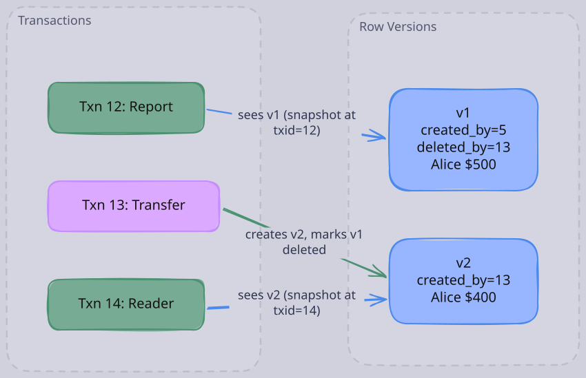
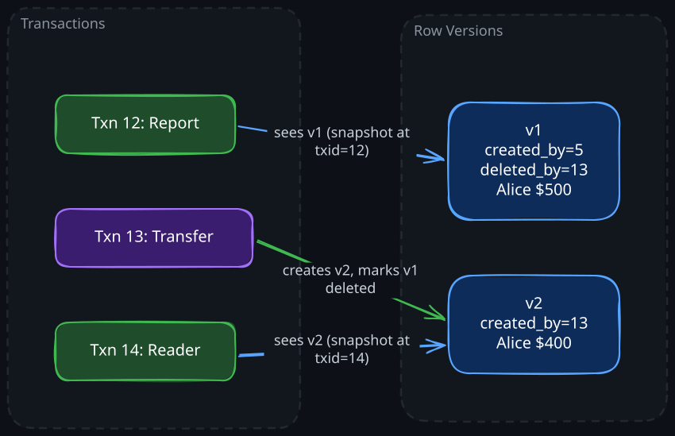

The Story
Uber’s 2016 blog post about migrating from PostgreSQL to MySQL was one of the most controversial technical posts ever written. The Postgres community was furious. Uber’s core argument: Postgres’s MVCC creates a new physical copy of the entire row on every update. For wide tables with frequent small updates, this means enormous write amplification — and because Postgres replication ships full row images, the replication bandwidth scales with row width, not change size. The Postgres community disputed parts of the analysis, but the post forced a genuine reckoning about MVCC trade-offs that the community had been avoiding. It remains a case study in how implementation choices in MVCC — not just the concept itself — determine real-world performance.
Imagine two transactions running concurrently on a bank database. Transaction A is a long-running report that sums all account balances. Transaction B is a simple transfer: move $100 from Alice’s account to Bob’s account.
Without any concurrency control, here is what can happen:
- Transaction A reads Alice’s balance: $500
- Transaction B deducts 400**
- Transaction B adds 600**
- Transaction B commits
- Transaction A reads Bob’s balance: $600
Transaction A saw Alice’s balance before the transfer and Bob’s balance after the transfer. The report now shows $100 more than actually exists in the system. This is read skew — the transaction read from two different points in time.
The naive fix is locking. Force Transaction A to acquire a shared lock on every row it reads, blocking Transaction B from writing until the report finishes. This works, but the report might take minutes. During that time, no transfers can happen. A single slow reader freezes all writers. A single slow writer freezes all readers. Throughput collapses under high concurrency.
MVCC solves this with a different insight: don’t overwrite data — create new versions. When Transaction B updates Alice’s balance, it does not destroy the old 400 and leaves the old version in place. Transaction A, which started before Transaction B, continues to see the $500 version. Transaction B’s changes are invisible to it. Each transaction reads from a consistent snapshot of the database, as if it were the only transaction running. Readers never block writers. Writers never block readers.
This is why virtually every modern database — PostgreSQL, MySQL InnoDB, Oracle, CockroachDB, Spanner — uses MVCC as its primary concurrency control mechanism.
1. How MVCC Works: A Step-by-Step Example
To understand the mechanics, we need to walk through a concrete example with transaction IDs, row versions, and visibility decisions.
1. Transaction IDs and Version Metadata
Every transaction is assigned a monotonically increasing transaction ID (txid) when it begins. Every row version carries two metadata fields:
created_by— the txid of the transaction that inserted this versiondeleted_by— the txid of the transaction that deleted (or replaced) this version; initially null
These fields are the basis for all visibility decisions.
2. A Concrete Walkthrough
Consider an accounts table. At the start of our scenario, there is one committed row:
| Row | created_by | deleted_by | name | balance |
|---|---|---|---|---|
| v1 | 5 | null | Alice | $500 |
Now three transactions begin:
| Transaction | txid | Action |
|---|---|---|
| Txn A | 12 | Long-running report: reads all balances |
| Txn B | 13 | Transfer: deduct $100 from Alice |
| Txn C | 14 | Another reader, starts after Txn B commits |
Step 1: Txn B (txid=13) updates Alice’s balance.
An update in MVCC is modeled as a delete of the old version + insert of a new version:
- The old row (v1) gets
deleted_by = 13 - A new row (v2) is created with
created_by = 13
The table now looks like:
| Row | created_by | deleted_by | name | balance |
|---|---|---|---|---|
| v1 | 5 | 13 | Alice | $500 |
| v2 | 13 | null | Alice | $400 |
Step 2: Txn B (txid=13) commits.
Step 3: Txn A (txid=12) reads Alice’s balance.
Txn A started before Txn B. Its snapshot was taken at txid=12, so it only sees changes from transactions with txid <= 12 that had committed before Txn A began. Txn B (txid=13) is invisible to Txn A regardless of whether it has committed. Txn A sees v1 ($500).
Step 4: Txn C (txid=14) reads Alice’s balance.
Txn C started after Txn B committed. Txn B (txid=13) is visible to Txn C. The old version v1 is deleted by txid=13 (visible to Txn C), so v1 is dead. The new version v2 is created by txid=13 (visible to Txn C), so v2 is live. Txn C sees v2 ($400).
Both transactions got consistent, correct answers without any locks.


2. Visibility Rules: The Decision Tree
When a transaction with txid=T reads a row version, it must decide: is this version visible to me? The database maintains a list of all transaction IDs that were in-progress (uncommitted) when T began. Call this set active_txids.
A version is visible to transaction T if all of the following hold:
- The
created_bytransaction has committed - The
created_bytxid is not inactive_txids(it was not in-progress when T started) - The
created_bytxid < T (it started before T) orcreated_by== T (the current transaction created it) - The version is not deleted, meaning either:
deleted_byis null, OR- the
deleted_bytransaction has not committed, OR - the
deleted_bytxid is inactive_txids, OR - the
deleted_bytxid > T
In short: a version is visible if it was created by a committed transaction that finished before the reader started, and it has not been deleted by any such transaction. The intuition behind these rules is that they collectively answer one question: “was this tuple alive at the moment this transaction took its snapshot?” The active_txids set captures transactions that were in-flight at snapshot time — from the reader’s perspective, their effects have not happened yet, so versions they created are invisible and deletions they performed have not occurred. This is how MVCC reconstructs a consistent point-in-time view without acquiring any locks.
Worked Example
Transaction T=15 begins. At that moment, the database records that transactions {12, 14} are still active (in-progress). Transaction 13 has already committed.
Consider a row with three versions:
| Version | created_by | deleted_by |
|---|---|---|
| v1 | 8 | 12 |
| v2 | 12 | null |
| v3 | 13 | null |
v1 (created_by=8, deleted_by=12):
- created_by=8: committed, not in active set, 8 < 15. Created-by is visible.
- deleted_by=12: 12 is in active_txids. The deletion is invisible to T=15.
- Result: v1 is visible (the delete hasn’t happened from T’s perspective).
v2 (created_by=12, deleted_by=null):
- created_by=12: 12 is in active_txids. The creation is invisible to T=15.
- Result: v2 is invisible.
v3 (created_by=13, deleted_by=null):
- created_by=13: committed, not in active set, 13 < 15. Created-by is visible.
- deleted_by is null: not deleted.
- Result: v3 is visible.
T=15 now sees two visible versions (v1 and v3). If they are for the same row, the database picks the latest visible version — v3. If they are for different rows, both are returned.
This demonstrates a subtle point: a transaction that committed (txid=13) after an in-progress transaction (txid=12) started is still visible to later readers. The visibility rule is about when the reader started, not about the ordering among writers.
3. Why Update = Delete + Insert
In MVCC, updates never modify a row in place. An update to a row creates a new version and marks the old version as deleted. This is not an arbitrary design choice — it is a fundamental requirement of multi-version concurrency.
Why in-place updates break multi-version reads. If Txn B overwrites Alice’s balance from 400 in place, what does Txn A (which started earlier) read? The $500 value no longer exists anywhere. The entire point of MVCC is that old readers can still see old values. Overwriting the value destroys the version that old transactions depend on.
Append-only storage is simpler to reason about. With delete+insert, each version is an immutable record. It was created at a specific point in time and will eventually be garbage collected. No version is ever modified after creation. This eliminates a large class of concurrency bugs — you never need to worry about a half-written row being visible to a concurrent reader.
Write-ahead log (WAL) interaction. Append-only updates align naturally with WAL-based crash recovery. Each new version is a clean log record. Rollback means marking the new version’s transaction as aborted — the old version automatically becomes the visible one again, because its deleted_by field points to an aborted transaction.
Index implications. This is where the design has real cost. When a row is updated, the new version might have a different physical location. Every index that points to the old version may need to be updated to also point to the new version. This is one of the most significant performance costs of MVCC, and different databases handle it very differently (see the section on indexes below).
4. MVCC and Isolation Levels
MVCC is not tied to a single isolation level. The same version-management machinery implements different isolation guarantees by varying when the snapshot is taken.
1. Read Committed
In Read Committed, each individual SQL statement gets a fresh snapshot. Within a single transaction, if you execute two SELECT statements, each one sees all transactions that committed before that statement began.
-- Transaction A (Read Committed)
BEGIN;
SELECT balance FROM accounts WHERE name = 'Alice'; -- snapshot at t1: sees $500
-- Meanwhile, Transaction B commits: Alice = $400
SELECT balance FROM accounts WHERE name = 'Alice'; -- snapshot at t2: sees $400
COMMIT;The two reads return different values. This is allowed under Read Committed — it prevents dirty reads but permits non-repeatable reads and read skew.
2. Snapshot Isolation (Repeatable Read)
In Snapshot Isolation, the transaction gets one snapshot at the beginning, and every statement within the transaction reads from that same snapshot. Concurrent commits are invisible for the entire duration of the transaction.
-- Transaction A (Snapshot Isolation)
BEGIN;
SELECT balance FROM accounts WHERE name = 'Alice'; -- snapshot at BEGIN: sees $500
-- Meanwhile, Transaction B commits: Alice = $400
SELECT balance FROM accounts WHERE name = 'Alice'; -- same snapshot: still sees $500
COMMIT;Both reads return $500. The transaction sees a frozen view of the database. This prevents non-repeatable reads and read skew.
The implementation difference is remarkably small. In Read Committed, the database refreshes active_txids before each statement. In Snapshot Isolation, the database captures active_txids once at BEGIN and reuses it for every statement. The visibility rules themselves are identical.
3. Serializable Snapshot Isolation (SSI)
SSI builds on Snapshot Isolation by adding conflict detection. Transactions still read from snapshots, but the database tracks which rows each transaction read and wrote. At commit time, if the database detects that two transactions have a read-write dependency that would not have occurred under serial execution, one of them is aborted.
This is how databases like PostgreSQL (since version 9.1) achieve full serializability without the heavy locking of two-phase locking. The cost is that some transactions are aborted and must be retried, but in practice the abort rate is low for most workloads.
5. Garbage Collection: Reclaiming Old Versions
MVCC accumulates dead row versions over time. Every update leaves behind an old version. Every delete leaves behind a version marked as deleted. Without cleanup, the database grows without bound. Garbage collection (also called version purging) removes versions that no active transaction can ever need to see.
1. When Can a Version Be Safely Removed?
A deleted version can be removed when no active or future transaction will ever need to read it. Specifically, if a version was deleted by transaction D, and D has committed, and no currently active transaction has a snapshot older than D’s commit, then the version is unreachable and can be reclaimed.
The critical constraint is the oldest active snapshot. If any transaction is still running with a snapshot from 30 minutes ago, every version deleted in the last 30 minutes must be preserved. A single long-running query can pin gigabytes of dead tuples in memory.
2. PostgreSQL: VACUUM
PostgreSQL stores all row versions in the main heap table. Dead tuples occupy space in the same data pages as live tuples. The VACUUM process scans tables and marks dead tuple space as reusable.
Key details:
- Regular VACUUM marks dead space as reusable but does not return it to the OS. The table file does not shrink.
- VACUUM FULL rewrites the entire table to reclaim space, but requires an exclusive lock on the table. This is extremely disruptive in production.
- Autovacuum runs in the background based on configurable thresholds (e.g., when a table has more than 20% dead tuples).
- The
xminhorizon — the txid of the oldest active snapshot — determines which dead tuples VACUUM can remove. A long-running transaction or an unused replication slot can hold back the xmin horizon and cause table bloat, where dead tuples accumulate faster than VACUUM can remove them. - Transaction ID wraparound is a PostgreSQL-specific hazard. Transaction IDs are 32-bit integers. After ~4 billion transactions, IDs wrap around, and old tuples could appear to be from the future. VACUUM must mark old tuples as “frozen” (visible to all transactions) before this happens. If VACUUM falls behind, PostgreSQL will refuse to accept new transactions to prevent data corruption. This is one of the most dangerous operational scenarios in PostgreSQL.
3. MySQL InnoDB: Undo Log and Purge Thread
InnoDB takes a different approach. The primary copy of the row always reflects the latest committed version in the clustered index. Old versions are stored in an undo log (also called the rollback segment). When a transaction needs to see an older version, InnoDB reconstructs it by applying undo log entries in reverse.
Key details:
- The purge thread runs continuously, removing undo log entries that are no longer needed by any active read view.
- Because old versions live in the undo log rather than the main table, InnoDB tables do not bloat the way PostgreSQL tables do. The main table always contains only the current version.
- However, long-running transactions still cause problems: the undo log grows large, and reading old versions requires traversing a long chain of undo records, which degrades read performance.
- InnoDB’s design means that reading the latest version is fast (it is right there in the clustered index), but reading old versions gets progressively slower as the version chain lengthens.
6. How Indexes Interact with MVCC
Indexes present a unique challenge in MVCC systems. When a row has multiple versions, what does the index point to? Different databases solve this very differently, and the choice has major performance implications.
1. PostgreSQL: Indexes Point to Heap Tuples
In PostgreSQL, every index entry points to a physical tuple in the heap (the main table). When a row is updated, a new heap tuple is created. If the indexed columns changed, a new index entry must also be created. But even if the indexed columns did not change, the index must still be updated to point to the new heap tuple, because the old tuple is at a different physical location.
This means that every update in PostgreSQL touches every index on the table, regardless of which columns were modified. For a table with 10 indexes, updating one column generates 10 new index entries. This is a significant write amplification cost.
Heap-Only Tuples (HOT) are PostgreSQL’s optimization for this problem. If an update does not modify any indexed column, and the new tuple can be placed on the same heap page as the old tuple, PostgreSQL creates a redirect chain from the old tuple to the new one instead of updating the index. The index still points to the old physical location, and a chain of pointers in the heap leads to the current version. This avoids the cost of index updates but only works when there is free space on the same page and no indexed column changed.
2. MySQL InnoDB: Clustered Index + Undo Log
InnoDB uses a clustered index where the primary key index is the table. The leaf nodes of the primary key B-tree contain the actual row data (always the latest committed version). Secondary indexes contain the primary key value, not a physical pointer.
When a read transaction needs an older version:
- It finds the row via the index (primary or secondary)
- It checks the row’s transaction metadata
- If the current version is too new, it follows the undo log chain backward to reconstruct the version it needs
This design has important tradeoffs:
- Updates that don’t change the primary key do not require index structure changes. The row stays in the same place in the clustered index; only the undo log grows.
- Secondary index lookups always go through the primary key, adding an extra B-tree traversal. But this means secondary indexes never need to be updated for non-key column changes.
- Reading old versions is expensive. The database must traverse the undo log chain, potentially reading many undo log pages. The longer the chain (due to many concurrent updates or long-running transactions), the worse the performance.
The net effect: InnoDB has lower write amplification on updates than PostgreSQL (no need to touch every index), but higher cost for reading old versions. PostgreSQL pays at write time; InnoDB pays at read time for stale snapshots.
7. MVCC vs. Locking: Choosing the Right Approach
The fundamental tradeoff between MVCC and lock-based concurrency control (e.g., two-phase locking) comes down to what you are willing to pay for correctness.
| Aspect | MVCC | Locking #40;e.g., 2PL#41; | |---|---|---| | Readers block writers? | No | Yes | | Writers block readers? | No | Yes | | Writers block writers? | Yes (same row) | Yes | | Storage overhead | Higher (multiple versions) | Lower (single version) | | Conflict handling | Optimistic (detect at commit) | Pessimistic (prevent upfront) | | Abort rate | Higher under contention | Lower (waits instead of aborting) | | Deadlock risk | Lower (reads don’t lock) | Higher (lock ordering issues) | | Best for | Read-heavy, mixed workloads | Write-heavy with strict ordering |
1. When to Choose MVCC (Most Workloads)
MVCC excels when reads significantly outnumber writes, which describes the vast majority of production workloads. Web applications, analytics dashboards, reporting systems, and API backends all benefit from the fact that long-running reads do not interfere with writes.
MVCC is also the better choice when you have a mix of short OLTP transactions and occasional long-running analytical queries. Under locking, the analytical query would hold shared locks for its entire duration, blocking all writes. Under MVCC, it reads from a snapshot while writes proceed unimpeded.
2. When Locking May Be Preferable
Locking is better for workloads with high write contention on the same rows. Consider a counter that thousands of transactions increment concurrently. Under MVCC with snapshot isolation, most of these transactions would read the same old value, try to write, and be aborted due to write-write conflicts. The abort-and-retry cycle wastes work. Under pessimistic locking, transactions queue up and execute sequentially — each one succeeds on the first attempt.
Locking is also necessary when you need true serializability without accepting any aborts. Two-phase locking guarantees serializable execution by construction (no transaction ever needs to be aborted for isolation violations, though deadlocks can still cause aborts). SSI achieves serializability on top of MVCC but with the possibility of aborting transactions that would violate serializability.
In practice, most modern databases use MVCC as the default and reserve explicit locking (SELECT FOR UPDATE) for the specific cases where optimistic concurrency is insufficient.
Revision Summary
- MVCC keeps multiple committed versions of each row, enabling transactions to read from a consistent snapshot without blocking writers. The core invariant: readers never block writers, writers never block readers.
- Each row version carries
created_byanddeleted_bytransaction IDs. Updates are modeled as a delete of the old version plus creation of a new version — in-place updates are impossible because old transactions still need the old value. - Visibility rules determine which version a transaction sees based on three inputs: the reader’s txid, the set of in-progress transactions at the time the reader started, and the commit status of each version’s creating/deleting transaction.
- Read Committed takes a new snapshot per statement; Snapshot Isolation takes one snapshot per transaction. The visibility rules are identical — only the snapshot timing differs.
- SSI adds conflict detection on top of Snapshot Isolation to achieve serializability without pessimistic locking.
- Garbage collection removes versions that no active transaction can see. Long-running transactions prevent cleanup: PostgreSQL suffers table bloat and txid wraparound risk; InnoDB suffers undo log growth and long version chain traversals.
- PostgreSQL indexes point to heap tuples (every update touches every index unless HOT applies); InnoDB stores latest version in the clustered index and reconstructs old versions from the undo log (lower write amplification, higher cost for stale reads).
Deep Understanding Questions
- Version chain length: A table receives 10,000 updates per second to the same hot row. An analytical query holds a snapshot open for 5 minutes. How long is the version chain for that row from the query’s perspective? What is the performance impact in PostgreSQL vs. InnoDB? Ans:
- Visibility edge case: Transaction T=20 begins. Active transactions are {15, 18}. A row has version v1 (created_by=10, deleted_by=15) and version v2 (created_by=15, deleted_by=null). What does T=20 see? What if transaction 15 commits one second after T=20 begins? Ans:
- HOT failure: A PostgreSQL table has 10 indexes. Under what conditions does the HOT optimization fail, and what is the write amplification impact when it does? Ans:
- VACUUM starvation: A PostgreSQL database has an idle transaction that has been open for 6 hours. It has executed no queries — it just ran
BEGINand the connection went idle. What effect does this have on VACUUM across the entire database? How would you detect and fix this? Ans: - Read Committed vs. Snapshot Isolation: A transaction reads a row, does some application logic, then reads the same row again. Under Read Committed, the second read sees a different value because another transaction committed in between. Give a concrete scenario where this causes a correctness bug, not just an inconsistency. Ans:
- Write-write conflicts: Two transactions both update the same row under Snapshot Isolation. The first writer wins and commits. What happens to the second writer in PostgreSQL? In MySQL InnoDB? Are the semantics identical? Ans:
- SSI abort rate: Under what workload patterns does SSI produce an unacceptable abort rate? How would you redesign the application to reduce SSI conflicts without falling back to two-phase locking? Ans:
- Transaction ID wraparound: PostgreSQL uses 32-bit transaction IDs. At 1,000 transactions per second, how long until wraparound? What happens if autovacuum cannot keep up with freezing old tuples? Why is this a production emergency? Ans:
- Undo log sizing: An InnoDB database has a long-running reporting query that runs for 30 minutes. During that time, a high-throughput OLTP workload generates millions of row updates. What happens to the undo log? What happens to the purge thread? What is the impact on other queries that need old versions? Ans:
- Index-only scans: PostgreSQL supports index-only scans, where the query is answered entirely from the index without visiting the heap. How does MVCC complicate this? What is the role of the visibility map, and when does it fail to help? Ans: